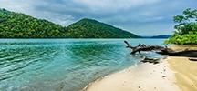
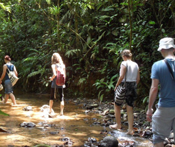
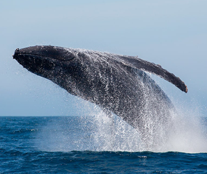
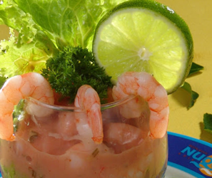
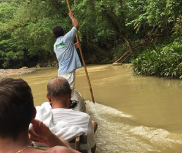

Nuqui
Si se busca un viaje a un lugar bonito, exótico, auténtico, y además se siente el deseo de conectarse con la naturaleza, el destino es Nuquí, en la costa Pacífica de Colombia. Este paraíso salvaje que se encuentra entre la selva y el mar, con playas de arena volcánica, aún no ha sido invadido por el turismo masivo, lo que hace sentir una paz absoluta.
Cómo llegar?
El trayecto tiene una duración de unos 50 minutos aproximadamente, desde el aeropuerto Olaya Herrera de Medellín sale un vuelo ida y vuelta los lunes, jueves y viernes.
Cuándo viajar?
De enero a marzo y agosto son las épocas secas, en las que hay que aprovechar este destino para disfrutar de la naturaleza pacífica, la pesca deportiva, el surf o el avistamiento de ballenas.
Qué hacer
Ir a las playas más bellas que se encuentran al sur de Nuquí, es encontrarse con un hermoso escenario de selva y mar. Otra excursión imperdible es salir de Guachalito, pasar por Terco, Terquito, Piedra Piedra y Termales, donde se encuentran varios riachuelos que bajan por la selva hasta desembocar en el mar, es algo para no perderse, así como las aguas azufradas y si se quiere hay servicio de masajes y tratamientos de spa.
5 razones para visitar Nuqui
Sendero Acuático
Es un plan muy romántico, por lo que puedes realizarlo en pareja. Esta es una de las actividades para realizar en Nuquí preferida por los visitantes, ya que puedes llegar caminando hasta las magníficas Cascadas del Amor.
Avistamiento de ballenas en Nuqui
La fecha clave para ir es octubre, ya que es más común encontrar a estos hermosos mamíferos.
Gastronomía de Nuqui
Por su ubicación, en el mar Pacífico, Nuquí es un sitio bendecido por especies de peces y mariscos que se convierten en deliciosos platos típicos; además esta tierra es muy variada en hierbas aromáticas y hortalizas que gracias a la curiosidad e ingenio de sus mujeres (que poseen grandes dotes culinarios), transforman estos sencillos ingredientes en delicias para el paladar de propios y visitantes.
Baño Termal

En Nuquí encontrarás una piscina natural de roca caliza, a la que muchos turistas acuden por sus propiedades medicinales y relajantes.
Pesca Artesanal
Se hace un recorrido en canoa nativa, también llamada chingo, a través del río Joví; aquí se pueden utilizar caretas y arpones.
PLANES
4 días
3 noches
Acomodación Doble
COP800.000 (Por persona y por estadía)